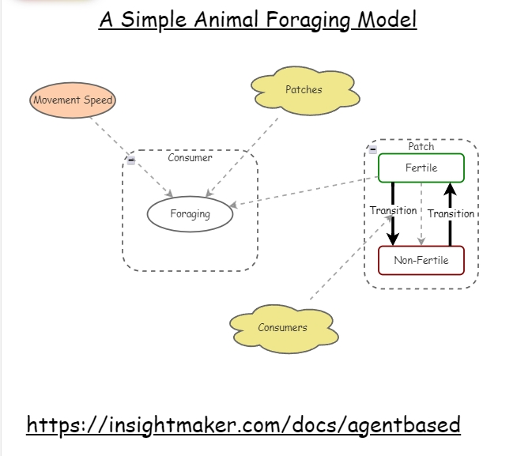

Un Modelo Basado en
Agentes (ABM) es una herramienta de simulación que se utiliza
para entender cómo las interacciones entre individuos (o
"agentes") afectan el comportamiento de un sistema en su conjunto.
A diferencia de los modelos de dinámica de sistemas que se
enfocan en cómo las variables agregadas (como los stocks y
flows) cambian con el tiempo, los ABM se centran en las acciones y
decisiones de cada agente individual y cómo estas decisiones
pueden llevar a patrones complejos y emergentes.
Imaginemos que
queremos entender cómo se comporta un rebaño de ovejas en
un campo. En un modelo de dinámica de sistemas, podríamos
representar la cantidad total de ovejas y los factores que afectan
su número, como el nacimiento y la muerte. Pero, si
quisiéramos ver cómo cada oveja se mueve, decide pastar o
sigue a otras ovejas, un ABM sería más
adecuado.
En un ABM, cada
oveja sería un "agente" que tiene sus propias reglas de
comportamiento, como moverse hacia el pasto más verde o
mantenerse cerca de otras ovejas. Al simular las interacciones
entre todas las ovejas, podemos observar cómo se forma el
rebaño, cómo se distribuye en el campo, y cómo
reacciona ante diferentes situaciones, como la presencia de un
depredador.
Un ejemplo simple
de ABM podría ser un sistema donde cada oveja decide moverse
hacia un área con más pasto y mantenerse cerca de otras
ovejas para protegerse de posibles peligros. Al correr la
simulación, podríamos observar cómo las ovejas se
agrupan en áreas específicas del campo, cómo cambia
su comportamiento si el pasto se agota en ciertas zonas, o
cómo la introducción de un puma en el sistema afecta la
distribución del rebaño.
Los ABM son
útiles cuando queremos explorar cómo las decisiones
individuales y las interacciones a nivel micro pueden influir en el
comportamiento a nivel macro de un sistema. Aunque no es un tema
que abordaremos en el curso, es interesante saber que existe este
enfoque complementario para modelar y entender sistemas
complejos.
